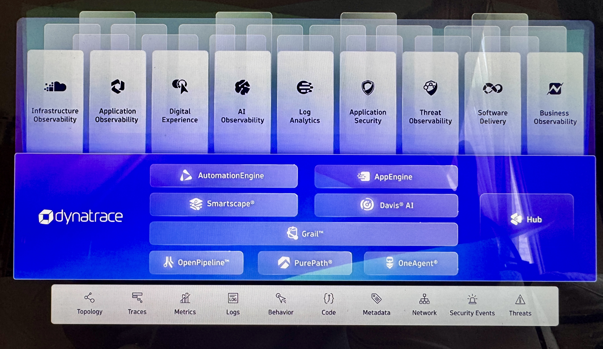

🛰️
OneAgent 與自動發現
理解 OneAgent 如何收集 host、process、service、container 與 application telemetry，並建立基礎觀測能力。
Dynatrace 對我來說不是產品功能清單，而是一套現代可觀測性能力：從 OneAgent、PurePath、Grail 與 DQL， 到 AWS/GCP、Kubernetes、資料庫、微服務、Synthetic Monitoring、OpenPipeline、Workflow 與 Application Security。 我關心的是：系統為什麼慢、哪裡出錯、如何驗證、怎麼自動化、如何支援企業級治理。

這張平台圖很適合表達我的能力重點：Dynatrace 不只是單一監控畫面，而是把 Infrastructure Observability、 Application Observability、Digital Experience、Log Analytics、Application Security、Software Delivery 與 Business Observability 放在同一個平台中，底層再透過 OneAgent、PurePath、OpenPipeline、Grail、 AutomationEngine、Davis AI 與 Smartscape 串成可分析、可追蹤、可自動化的架構。
我不是只會看 dashboard，而是理解資料如何從 host、container、application、service、session、logs 與 metrics 進入平台， 再如何透過 trace、DQL、notebook、workflow 與 alert 變成可行動的資訊。
理解 OneAgent 如何收集 host、process、service、container 與 application telemetry，並建立基礎觀測能力。
能用 PurePath 觀察跨服務交易路徑，追蹤 API request、service call、database query 與錯誤根因。
能用 DQL 在 notebooks 中分析 logs、metrics、sessions 與 synthetic data，建立互動式排查與分析視角。
接觸過 EC2、EKS、RDS、S3、Amplify、GCP web app、Kubernetes 與雲端服務整合監控。
能理解 DQL task、external data、Slack/Jira integration、Jinja template 如何讓監控事件變成自動化流程。
理解 Runtime Application Protection、vulnerability triage、attack alert 與安全事件如何納入可觀測性平台。
我曾經用這些技能分析使用者體驗、監控雲端與微服務環境、追蹤系統根因，並把監控資料延伸成可行動的架構洞察。
用 Digital Experience Monitoring、Appdex、page load analysis、user session metrics 與 error analysis 判斷使用者體驗問題。
從 host metrics、Infrastructure & Operations app、container monitoring 到 Smartscape，理解基礎設施與服務拓撲。
接觸 EC2、PostgreSQL setup、OneAgent、ActiveGate、psql monitoring extension 與 database monitoring 的基本與進階資料。
理解 GCP deployment、Kubernetes cluster、EKS、queues、databases、microservices、logs、metrics 與 distributed tracing 的關係。
理解 OpenPipeline、Monaco、OAuth、GitHub WebHook、SDLC data export 與 Dynatrace Notebook 分析如何串成工程流程。
實作過 Node.js / Java Spring Boot app 部署、Runtime Application Protection、vulnerability triage 與 Log4j attack simulation。